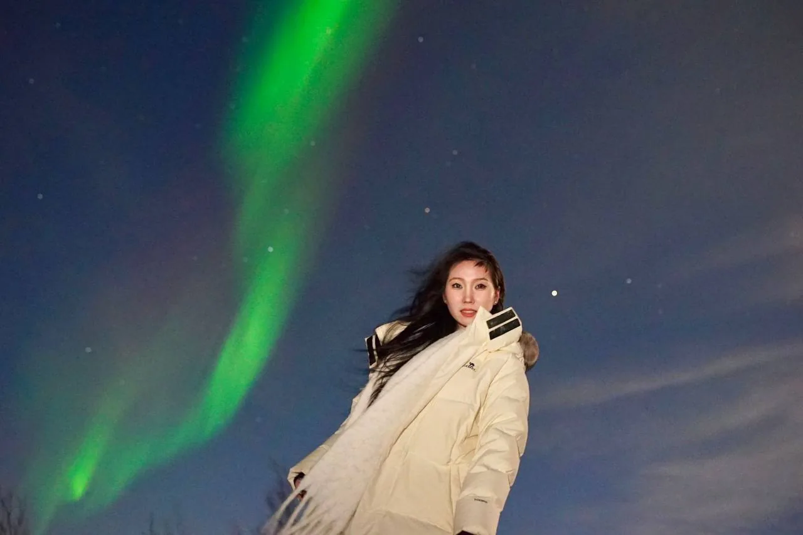
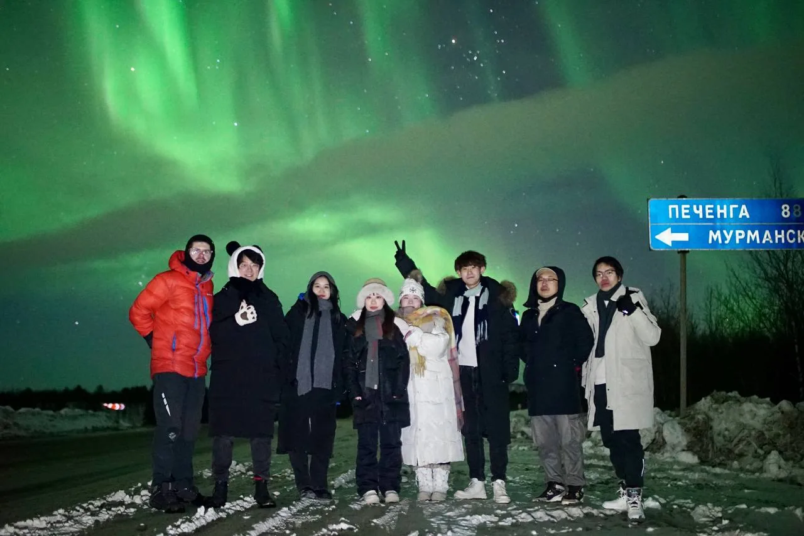
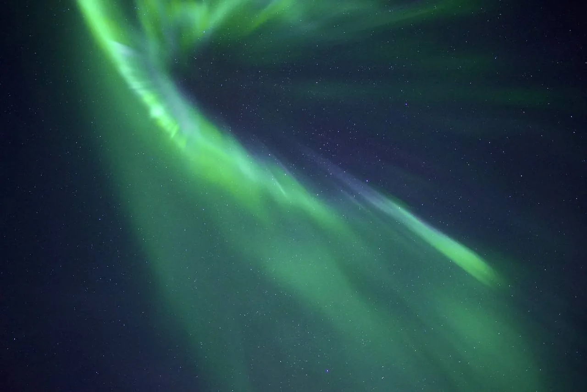

«Когда ехать, чтобы точно увидеть сияние?» — это первый вопрос, который нам задают. Короткий ответ: в любую тёмную ночь сезона, с конца августа по середину апреля. Но у каждого месяца свой характер — где-то теплее, где-то темнее, где-то чаще ясное небо. Разберём по порядку, как местные гиды.
Сезон охоты за авророй на Кольском полуострове длится с конца августа по середину апреля — всё то время, когда над Мурманском есть настоящие тёмные ночи. Летом, с мая по июль, стоит полярный день: небо светлое круглые сутки, и сияние просто не видно, даже если оно есть. Поэтому ехать именно «за сиянием» летом бессмысленно — а вот с осени по весну шансы одни из лучших в России.
01Сезон авроры: коротко о главном
Северное сияние в небе есть почти всегда, но увидеть его глазами можно только в темноте. Поэтому весь сезон завязан на длину ночи. С конца августа ночи на Кольском становятся достаточно тёмными, чтобы поймать первые всполохи, а к середине апреля они снова светлеют — и сезон закрывается до осени.
Внутри этого окна «плохого» месяца нет: яркую аврору ловят и в сентябрьских сумерках, и в морозном феврале, и в мартовское равноденствие. Разница не в том, «бывает или не бывает сияние», а в сопутствующих условиях — температуре, вероятности ясного неба и длине тёмного времени. Давайте пройдёмся по каждому месяцу.
02Сравнение месяцев в таблице
| Месяц | Тёмные ночи | Шанс ясного неба | Особенности |
|---|---|---|---|
| Конец августа | Короткие | Средний | Первые тёмные ночи, ещё тепло и комфортно |
| Сентябрь | Растут | Хороший | Равноденствие, повышенная активность, плюсовая температура |
| Октябрь | Длинные | Средний | Настоящая полярная осень, бывает пасмурно и ветрено |
| Ноябрь | Очень длинные | Средний | Темнеет рано, приходит снег и мороз |
| Декабрь | Полярная ночь | Переменный | Темно почти круглосуточно, но чаще облачно |
| Январь | Полярная ночь | Хороший | Морозно и ясно, зимняя сказка, короткий день |
| Февраль | Длинные | Отличный | Часто ясное морозное небо — одни из лучших условий |
| Март | Длинные | Отличный | Равноденствие, активное сияние, теплее и светлее |
| Начало апреля | Убывают | Хороший | Ночи светлеют, сезон постепенно закрывается |
| Май–июль | Полярный день | — | Сияние не видно из-за светлого неба |
Оценки в таблице — усреднённые: погода на Севере переменчива, и любой месяц может выдать как череду ясных ночей, так и неделю сплошных облаков. Именно поэтому в охоте так важно закладывать несколько попыток, но об этом ниже.
03Разбор по месяцам

Конец августа
Официальное открытие сезона. Ночи только-только становятся тёмными, поэтому окно для охоты пока короткое — пара часов вокруг полуночи. Зато на улице ещё тепло, нет снега и мороза, а тундра стоит в осенних красках. Хороший вариант для тех, кто плохо переносит холод и хочет совместить сияние с комфортными прогулками.
Сентябрь
Один из самых недооценённых месяцев. Ночи уже заметно длиннее, а вблизи осеннего равноденствия геомагнитная активность статистически выше — сияние в сентябре бывает особенно частым и ярким. При этом температура ещё щадящая (нередко плюсовая), озёра не замёрзли и красиво отражают всполохи. Минус один: осень на Кольском дождливая, и ясное небо приходится ловить.
Октябрь
Ночи становятся по-настоящему длинными, времени на охоту много. Но октябрь — самый пасмурный, ветреный и слякотный месяц: приходят циклоны, часто затянуто. Сияние в это время активное, вопрос только в облаках. Если повезёт с погодным окном — впечатления будут отличные, а туристов ещё немного.
Ноябрь
Темнеет очень рано, ложится снег, приходит устойчивый мороз — пейзаж окончательно превращается в зимний. Ночей для охоты предостаточно. Погода нестабильная, но между циклонами всё чаще случаются ясные морозные ночи, когда аврора видна во всей красе. Хороший баланс между длинными ночами и началом «фотогеничной» зимы.
Декабрь
Начало полярной ночи: с начала декабря солнце в Мурманске не поднимается над горизонтом, и сумерки тянутся почти круглые сутки. Ловить сияние можно даже ранним вечером. Атмосфера предновогодняя и волшебная, но есть нюанс: декабрь часто облачный и снежный, поэтому ясное небо ценится на вес золота. Закладывайте побольше ночей.
Январь
Полярная ночь продолжается до середины месяца, потом ненадолго возвращается солнце. Январь заметно морознее декабря, а вместе с антициклонами приходит и ясное небо — ловить аврору становится проще. Это классический «сказочный» вариант: снег, мороз, звёзды и сияние над белой тундрой. Одеваться нужно максимально тепло.
Февраль
Многие гиды считают февраль лучшим месяцем сезона. Ночи ещё длинные, устанавливается устойчивая морозная и ясная погода, а сияние стабильно активное. Именно в феврале выше всего шанс попасть на несколько ясных ночей подряд. Главное — быть готовым к серьёзному холоду: в ясные ночи мороз крепчает.
Март
Второй сильный «равноденственный» месяц наравне с сентябрём: вблизи весеннего равноденствия сияние снова статистически активнее. При этом день уже прибавляется, становится теплее и комфортнее, а ясных ночей по-прежнему много. Отличный компромисс для тех, кому в феврале слишком холодно, но хочется высоких шансов на яркую аврору.
Начало апреля
Финал сезона. Сияние ещё случается, но ночи стремительно светлеют, и тёмное окно сжимается. К середине апреля белые ночи почти вытесняют темноту. Ехать за авророй в это время ещё можно, но лучше в самом начале месяца и с запасом ночей — дальше сезон закрывается до конца августа.
04От чего вообще зависит сияние

Месяц — это только фон. Увидите вы сияние конкретной ночью или нет, решают четыре вещи:
- Солнечная активность (KP-индекс). Шкала геомагнитной активности от 0 до 9. Чем выше, тем ярче и «южнее» сияние. Но Мурманск лежит прямо под авроральным овалом, поэтому здесь хватает даже KP 2–3, а при KP 4+ аврора занимает всё небо.
- Ясное небо — самое главное. Никакая солнечная буря не поможет, если сверху сплошные облака. Именно погода, а не сила вспышки, чаще всего решает исход охоты.
- Удалённость от городской засветки. Фонари Мурманска перебивают слабое сияние. Чем темнее вокруг и чем шире открыт горизонт, тем контрастнее и ярче выглядит аврора.
- Терпение. Сияние живёт всполохами: может вспыхнуть на 10 минут, погаснуть и разгореться снова через час. Кто дождался — тот увидел.
05Сколько дней закладывать на охоту
Главный совет всей статьи: не приезжайте за сиянием на одну ночь. Одна ночь — это лотерея: можно попасть ровно на тот вечер, когда всё небо затянуто, или на провал активности. А вот несколько попыток кардинально меняют расклад.
Оптимально закладывать минимум 2–3 ночи охоты. Тогда даже если одна ночь окажется пасмурной, остаются запасные шансы поймать ясное окно. Днём это время не пропадает: пока темнеет только ночью, можно съездить в Териберку, к хаски и оленям, в Хибины или на обзорную по Мурманску — а вечером снова выйти на охоту.
06Практические советы охотнику

Одевайтесь теплее, чем кажется. Ночью на природе холоднее, чем в городе, а стоять приходится почти неподвижно — тело не греется движением. Нужны термобельё и несколько слоёв, тёплая непродуваемая куртка и штаны, шапка, перчатки и по-настоящему тёплая непромокаемая обувь (ноги мёрзнут первыми). Термос с горячим напитком и грелки для рук лишними не будут.
Как следят за сиянием гиды. Мы смотрим не в один прогноз, а сразу в несколько: геомагнитную активность (KP и данные NOAA) и, что важнее, карты облачности. Дальше — самое ценное: если над одной точкой затянуло, мы просто уезжаем туда, где по прогнозу чисто. Облачность на Кольском меняется быстро, и охота нередко превращается в переезд «за ясным небом».
Про фото. Даже современный смартфон снимает аврору неплохо: включите ночной режим или ручную выдержку 3–10 секунд, обоприте телефон на что-то неподвижное, выключите вспышку и наведите фокус на бесконечность. На камере — ISO 1600–3200, выдержка 5–15 секунд, светосильный объектив и штатив. А чтобы вы не выбирали между «смотреть» и «снимать», на выездах мы фотографируем гостей на профессиональную камеру.
07Почему за сиянием лучше ехать с гидом
Можно арендовать машину и охотиться самому — но именно в сиянии местный гид решает главную проблему: куда ехать сегодня ночью. Он знает тёмные точки без засветки, читает карты облачности и в реальном времени уводит группу туда, где есть шанс на ясное небо. Плюс трансфер от отеля и обратно (ночью за городом это особенно важно), горячий чай, северные настойки и фото на память.
Охота за северным сиянием под Мурманском
Забираем от отеля, увозим за город к тёмным точкам, следим за прогнозом и ловим ясное небо. Снимаем вас на профессиональную камеру, угощаем чаем и северными настойками. Не показалось — вторая охота дешевле.
Хотите глубже разобраться, где именно ловить аврору, как читать KP-индекс и что ещё посмотреть зимой на Кольском — почитайте наш полный гид охотника за северным сиянием в Мурманске.
08Частые вопросы
Сезон длится с конца августа по середину апреля, когда ночи тёмные. Плохого месяца внутри сезона нет: аврору ловят и в сентябре, и в феврале, и в марте. Статистически чуть активнее сияние вблизи равноденствий — в сентябре и марте. Летом (май–июль) сияние не видно из-за полярного дня.
Больше всего решают два фактора — солнечная активность и ясное небо, а не конкретный месяц. Чуть выше вероятность в сентябре и марте (равноденствия), а самые тёмные ночи и стабильно морозная ясная погода приходятся на декабрь–февраль. Идеального месяца-гарантии не существует.
Минимум 2–3 ночи. За одну ночь можно попасть на облака или слабую активность, а несколько попыток резко повышают шанс: за 2–3 ночи охоты в сезон аврору застаёт большинство гостей. Днём в это время удобно ездить на экскурсии по Кольскому.
Нет. С мая по июль на Кольском полярный день: небо светлое круглые сутки, и даже сильное сияние не видно на фоне светлого неба. Ехать именно за авророй имеет смысл с конца августа по середину апреля.
От солнечной активности (KP-индекс), от ясного неба (это главное — при облаках сияние не видно), от удалённости от городской засветки и от терпения. Мурманск лежит под авроральным овалом, поэтому даже слабой активности хватает, лишь бы небо было чистым.
Нет, и любой, кто её обещает, лукавит — сияние зависит от Солнца и погоды. Но за 2–3 ночи охоты с местным гидом, который следит за прогнозом и уезжает туда, где ясно, шанс поймать аврору высокий. У нас вторая охота стоит 3 000 ₽ вместо 4 000 ₽.